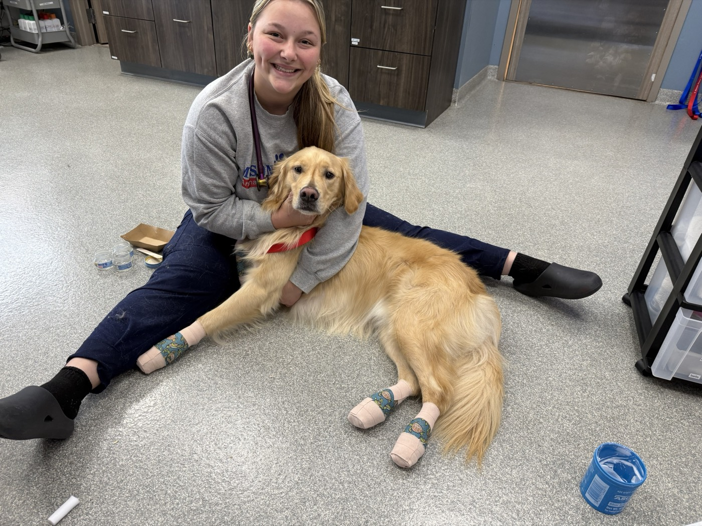
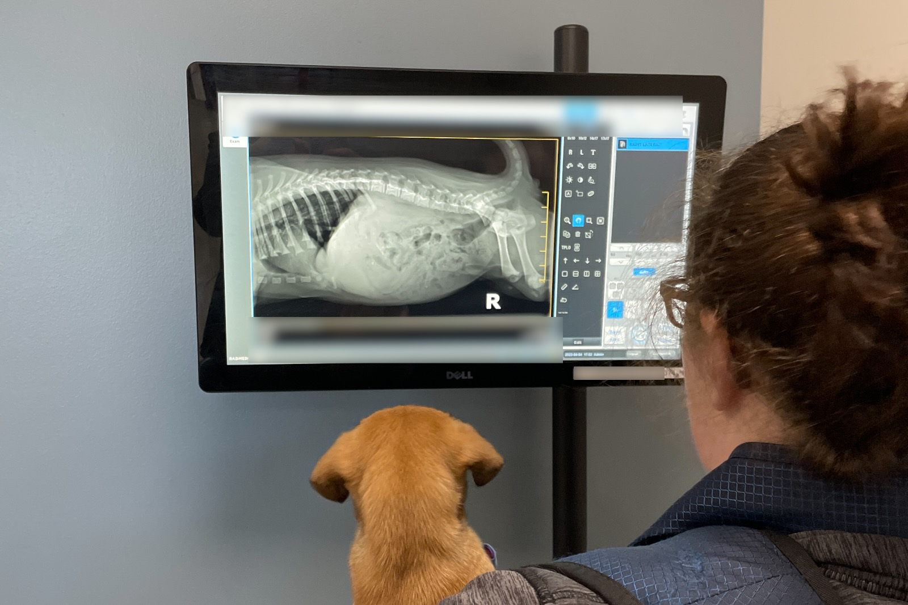

Your Next Great Career Move Could Be an Emergency.
Do meaningful work. Build serious emergency skills. And do it with a locally operated team that gives you the support, tools and room to grow.
- 24/7 Emergency Hospital
- Privately Owned
- Locally Operated
- Shrewsbury, PA
Why Work at Mason Dixon?
Because where you work matters.
-
Locally Owned
Work with people who make decisions here—not at a distant corporate headquarters.
-
Real Emergency Medicine
Treat urgent, complex and critical cases in a 6,200-square-foot emergency hospital built for the work.
-
Pay Without the Games
Compensation is posted up front. Veterinarians earn a straight salary with no production targets.
-
Room to Grow
Mentorship, continuing education and leadership opportunities help you keep moving forward.
-
A Team That Has Your Back
Emergency medicine takes teamwork. You’ll work alongside people who step in, help out and solve problems together.
This Is the Part You Can’t Put in a Benefits List.
The team matters. The culture matters. And so does how you feel at the end of a hard shift.
Start Your Career at Mason Dixon-
You’re Never on an Island.
Tough cases happen. You’ll have people around you who step in, share the load and help solve the problem.
-
You Keep Getting Better.
Learn from experienced emergency professionals, sharpen your skills and take on more as you’re ready.
-
Your Life Still Matters Outside of Work.
Flexible scheduling, PTO, sick days and mental health days help make demanding work more sustainable.
-
The Work Feels Worth It.
The cases are real. The stakes are real. And when your shift ends, you know you did something that mattered.
Do More Than Work in an ER.
Practice real emergency medicine. At Mason Dixon, veterinarians and technicians work with urgent, complex and critical cases—and have the equipment, team and support to treat many of them right here.

In-House Laboratory
Get answers quickly when time matters.
Radiology & Ultrasound
Advanced diagnostics without automatically sending cases elsewhere.
Emergency Surgery
Move from diagnosis to treatment when minutes matter.
Endoscopy
More options for handling emergency cases in-house.
Oxygen Support
Critical respiratory support when patients need it most.
Blood Transfusions
Life-saving treatment available when the situation calls for it.
Critical Care
The people, equipment and environment to care for seriously ill and injured animals.
New Graduate? You Won’t Be Thrown Into It Alone.
New veterinary graduates receive hands-on, one-on-one mentorship from an emergency team with decades of combined experience.

The cases are real. The stakes are real.
And when your shift ends, you know you did something that mattered.
Find Your Place at Mason Dixon.
Compensation is posted up front for every role. Pick the one that fits and take the next step.
-
View Veterinarian Position
Emergency Veterinarian
Up to $220,000/year
Practice emergency medicine with a straight salary, no production targets and one-on-one mentorship available for new graduates.
-
View Shift Lead Position
Veterinary Technician Shift Lead
Up to $30/hour + Up to $5,000/year Leadership Stipend
Lead your shift, mentor other technicians and stay hands-on with emergency and critical care.
-
View Vet Tech Position
Emergency Veterinary Technician
Starting at $19.55/hour
Build your emergency skills in a fast-paced hospital with room to take on more as your experience grows.
-
View Receptionist Position
Emergency Hospital Receptionist
Starting at $15.50/hour
Be the calm, capable first person pet owners hear when something is wrong—and an essential part of the emergency team.
Our Work Matters. So Does Giving Back.
Mason Dixon serves families throughout southern York County, Pennsylvania and northern Baltimore County, Maryland—and works with local rescue organizations and the York County SPCA to help animals who might otherwise go without emergency care.
Learn More About Mason Dixon- Local rescue organizations
- York County SPCA
Ready for Work That Actually Means Something?
Bring your skills. Build new ones. Be part of a team doing work that matters every single day.
Questions first? Contact Us
Questions Before You Apply?
Quick answers about roles, pay, schedules and what you need to get started.
Apply NowYes. New graduates receive hands-on, one-on-one mentorship from an emergency team with decades of combined experience.
No. Veterinarians earn a straight salary of up to $220,000 per year with no production targets.
Veterinarians need an active Pennsylvania license or the ability to obtain one within six months.
Emergency or critical care experience is preferred, but it is not required. Candidates should have at least two years of experience in veterinary medicine.
Technician and receptionist roles include 12-hour shifts, including overnights, holidays and two weekends per five-week cycle. Flexible options such as 3x12 schedules are available for eligible positions.
96 Sofia Drive, Suite 203, Shrewsbury, PA 17361
We serve southern York County, Pennsylvania and Baltimore County, Maryland.
Start with your resume. You can also include a short note telling us about yourself and why you’re interested in the position.